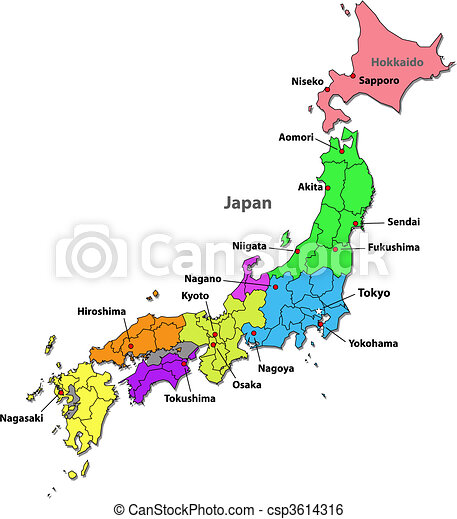
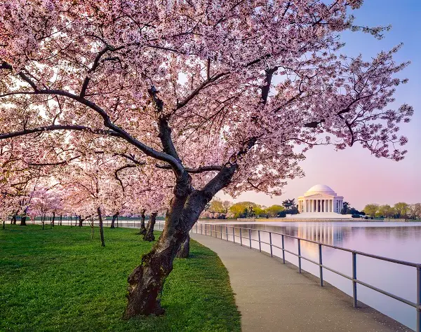
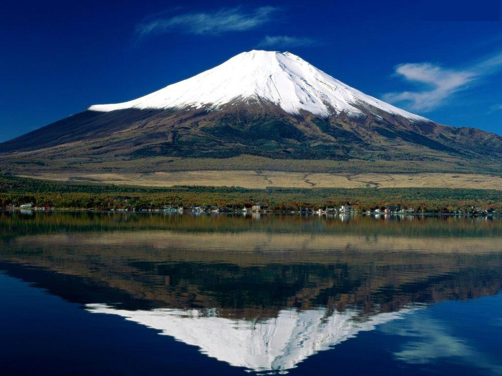

Japan

Japan |
|
História | Curiosidades | Turismo |
|---|
Resumo sobre o Japão |
|
|
O Japão é um país insular localizado no extremo leste do continente asiático. Ele é composto por milhares de ilhas banhadas pelas águas do oceano pacífico. das quais se destacam 4: Tem como capital a cidade de Tóquio, que fica na maior ilha japonesa: Honshu. Os climas predominantes do Japão são: clima temperado ao norte, e o tropical ao sul. Enquanto o relevo é formado por montanhas e planaltos em sua maioria. O Japão está inserido no Círculo de Fogo do Pacífico, uma área de alta instabilidade tectônica. É um dos países mais populosos do mundo , contando hoje com 126.219.147 milhões de habitantes (em 2023). A economia japonesa é altamente desenvolvida, e atualmente ocupa a terceira posição em escala mundial. O setor terciário é predominante no Japão, embora sua indústria possua grande importância para a economia. A indústria japonesa é moderna e altamente tecnológica, tendo como foco a produção de eletrônicos e veículos. O Japão é o único país do mundo a ter um imperador como representante do poder Executivo (chefe de Estado). O chefe de governo é o primeiro ministro. |
 |
Gegrafia do Japão |
|
O Japão é um país insular localizado no extremo leste da Ásia, sendo banhado pelo oceano Pacífico. O território japonês, que possui um total de 377.930 km² de área, é constituído por um arquipélago formado por milhares de ilhas que se estendem de nordeste a noroeste por, aproximadamente, 2400 km. As maiores e mais densamente povoadas são: O arquipélago japonês fica na região chamada Círculo de Fogo ou Anel de Fogo, área de extrema instabilidade tectônica onde há a presença do maior número de vulcões do Pacífico, além da ocorrência de terremotos, maremotos e tsunamis." |
Clima do Japão |
|
|  |
Dois tipos de clima são predominantes no território do Japão. O primeiro deles é o temperado frio, que ocorre nas terras setentrionais. É caracterizado por verões amenos, com média de 21 ºC, e invernos rigorosos que podem registrar até -8 ºC nos termômetros e com precipitação na forma de neve. Já no sul predomina o clima tropical, com verões quentes e chuvosos e invernos de frios a moderados, com temperatura média de 18 ºC. O relevo interfere na distribuição de umidade pelo arquipélago japonês. Sob a influência das monções, os locais situados a oeste, mais próximos do mar do Japão (que fica a leste da Ásia continental), recebem maior teor de umidade e precipitação durante todo o ano. A leste, por sua vez, o bloqueio das cadeias montanhosas condiciona menores índices pluviométricos, com chuvas que se concentram no verão. |
Relevo do Japão |
|
Aproximadamente 80% do Japão são formados por cadeias montanhosas e planaltos. Isso se deve ao fato de o arquipélago estar situado em uma área de contato entre diversas placas tectônicas em que predominam as forças orogenéticas, que causam o soerguimento da crosta. A elevação média no país é de 438 metros. Seu ponto mais elevado é o monte Fuji, a 3776 metros acima do nível do mar |
Vegetação do Japão |
|
Boa parte das ilhas japonesas é recoberta por florestas do tipo tropical úmida, subtropical e temperada, sendo esta última predominante na porção norte e a primeira nas terras mais ao sul. Um dos símbolos do país, e que pode ser encontrado em todas as regiões, é a cerejeira, que floresce durante a primavera e proporciona a paisagem bastante colorida e característica do Japão. |
|  |
Hidrografia do Japão |
|
O Japão possui muitos rios curtos e uma série de lagos que recobrem a sua superfície. Principalmente nas áreas urbanas, a maior parte dos cursos d’água foi retilinizada e teve a sua margem revestida de concreto para o controle das enchentes. Ressalta-se ainda que aqueles rios próximos dos vulcões têm elevado teor de acidez, o que torna suas águas impróprias para consumo. O maior rio do Japão é o Shinano, que percorre 367 km no noroeste da ilha de Honshu e deságua no mar do Japão depois de confluir com o rio Sai. |
Economia do Japão |
|
|
A economia japonesa é uma das mais desenvolvidas do mundo, ficando em terceiro lugar entre as maiores economias mundiais, atrás somente dos Estados Unidos e da China. A partir da segunda metade do século XX, após os devastadores eventos da Segunda Guerra Mundial, o crescimento interno do Japão se acelerou ano após ano até o final da década de 1980. O grande foco inicial foi a ampliação do parque industrial e, mais tarde, o desenvolvimento do setor tecnológico." |